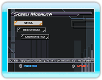

18 |
Modalità SOLO |
 |
|
Nella modalità SOLO puoi scegliere tra tre diverse opzioni. Seleziona il tipo di
gara a cui vuoi partecipare, quindi premi .
● SFIDA
● RESISTENZA
● CRONOMETRO
Dopo avere scelto un tipo di gara, devi selezionare un personaggio e l'attrezzatura con cui gareggiare. Infine, seleziona un percorso e la gara avrà inizio.
In modalità OPZIONI è possibile cambiare il livello di difficoltà per SFIDA e RESISTENZA.
|
 |
 |
 |